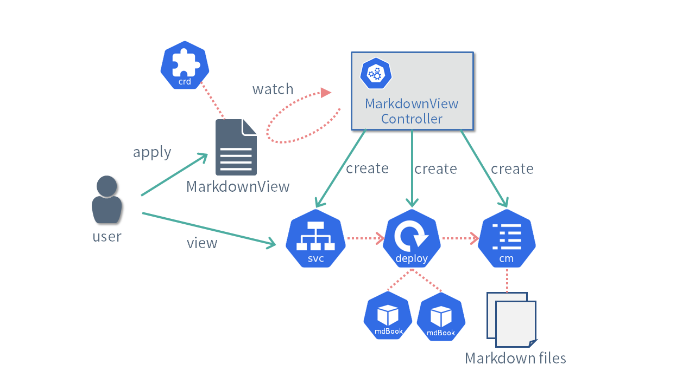

Kubebuilder制作和学习
在本文档中，您将学习如何使用Kuberbuilder开发自定义控制器/运营商。
什么是Kubebuilder？
KubeBuilder是开发自定义控制器/操作员扩展Kubernetes的框架。
Kubernetes可以使用部署和服务等资源轻松地提供应用程序部署和服务。 除了使用标准资源外，用户还可以定义自己的自定义资源并扩展Kubernetes。 处理此自定义资源的程序称为自定义控制器。 用于使用自定义控制器自动化其软件设置和操作的程序称为操作员。
实施自定义控制器和运营商的示例包括以下内容：
Cert-Manager是一个自定义控制器，可以使用自定义资源（例如证书资源和ISER资源）自动化证书问题。 MoCo是使用MySQLCluster资源和backuppolicy Resources构建MySQL群集和管理自动备份的管理。
通过Kubebuilder、client-go您可以通过提供自动生成易于使用和抽象的清单来轻松开发自定义控制器（crd）。
KubeBuilder由以下工具和库组成。
- kubebuilder
- 生成自定义控制器项目模板的工具
- controller-tools
- 从GO源代码生成清单的工具
- controller-runtime
- 用于实现自定义控制器的框架库
通过这个文档，我们将学习如何使用这些工具实现自定义控制器。
兼容版本
- Kubebuilder: v3.11.1
- controller-tools: v0.12.0
- controller-runtime: v0.15.0
更改日志
- 2020/07/30: 第一版出版
- 2021/04/29: Kubebuilder V3兼容
- 2021/07/25: 将样本更改为MarkdownView Controller并查看整个文本
- 2022/06/20: Kubebuilder v3.4.1兼容
- 2022/07/18: Kubebuilder v3.5.0兼容，审查样本代码
- 2023/08/29: KubeBuilder v3.11.1兼容
安装
使用 Kubebuilder 时，需要以下软件。请按照步骤进行设置。
- Go 1.20
- Docker 24.0.2
- kind v0.20.0
- Kubebuilder v3.11.1
自定义开发控制器的基础知识
本节介绍了开发自定义控制器所需的Kubernetes的基本知识。
申明式（Declarative）
Kubernetes中最重要的概念是声明性的API。
例如，如果要在kubernetes上部署nginx，我们只需要通过如下YAML格式中描述的清单并创建部署资源。
apiVersion: apps/v1
kind: Deployment
metadata:
name: nginx-deployment
spec:
selector:
matchLabels:
app.kubernetes.io/name: nginx
replicas: 3
template:
metadata:
labels:
app.kubernetes.io/name: nginx
spec:
containers:
- name: nginx
image: nginx:latest
在Kubernetes中，有管理各种资源的控制器。
比如Deployment资源在kube-apiserver上注册时，管理Deployment的控制器会创建一个新的ReplicaSet资源。
接下来，当注册ReplicaSet资源时，管理ReplicaSet的控制器会创建在spec.replicas中指定的三个新 Pod。
此外，当Pod资源在kube-apiserver上注册时，一个名为kube-scheduler的程序会确定Pod将被放置的节点并更新Pod信息。
每个节点上运行的名为kubelet的程序在找到具有其节点名称的Pod资源时会启动一个容器。

例如我们可以通过Deployment资源的Spec.Replicas'字段来控制pod数量，可以增加或者减少spec.replicas`来减少或增加pod。
这样，在Kubernetes中，多个程序根据用户声明的清单协同工作，并调整系统使其处于所需的状态（在本例中，三个Nginx实例正在运行）。
通过使用声明式而非命令式（Imperative）机制，运行在 Kubernetes 上的应用程序可以实现高可用性和可扩展性。 然而，控制器的实现可能非常困难，因为它必须考虑各种情况。
CRD(Custom Resource Definition)和CR(Custom Resource)
Kubernetes附带许多标准资源，比如Deployments和Pod。
虽然在某种程度上使用标准资源构建系统是可能的，例如，如果你想在Kubernetes上自动化证书颁发或MySQL集群管理，你将需要自定义开发控制器。
因此，提供了自定义资源（CR）作为Kubernetes用户自由使用新资源的机制
为了使用自定义资源，您需要准备 CRD（自定义资源定义）作为其定义。CRD允许您以OpenAPI v3.0格式编写验证，如下所示
自定义控制器
在 Kubernetes 中，检查资源状态并执行某些处理的程序称为控制器。
例如，一个控制器正在基于Deployment资源创建ReplicaSet资源。
如果您查看Kubernetes源代码，您会发现有许多与标准资源相对应的控制器。
- https://github.com/kubernetes/kubernetes/tree/master/pkg/controller
相比之下，用户定义的自定义资源控制器称为自定义控制器。
下面，我们将介绍实现控制器时的重要概念。
Reconciliation Loop
Reconciliation Loop协调循环是自定义控制器的主要逻辑。
将资源中描述的状态与系统当前的状态进行比较，并进行调整以消除差异。

在前面的部署实例中，资源定义的是三个pod，协调循环（Reconciliation Loop）通过增加或者减少pod的数量来匹配理想状态来处理该协调过程。
冪等
Reconciliation Loop(协调循环)必须是幂等的。
比如我们之前的示例中pod的控制器，如果这个控制器被申明为3个pod，那么无论调用多少次的Reconcicle,pod的数量都始终保持是3。当存在3个pod，再次调用reconcile时，不应在创建三个pod或有任何报错信息。
显而易见，在kubernetes中，通过命令式基础设施自动化工具通常不是幂等的。
水平触发和边缘触发
Reconciliation Loop是指在资源被新注册或编辑时，或者目标资源的状态发生变化时，必须进行适当的处理。
例如，在前述的例子中，如果Deployment资源中描述的副本数增加，或者由于服务器故障导致 Pod 数量减少时，则需要创建新的 Pod。
在这种情况下，根据状态变化事件执行处理被称为边缘触发器，根据当前状态执行处理被称为水平触发。
-
水平触发: 定期检查各个集群内各种对象的状态，如果满足某种条件（例如pod running 状态），对应的handler就一直触发一些动作。
-
边缘触发: 当某些对象发生了状态改变（例如pod 从running到不健康状态，从没有pod到创建出一个pod），在改变的时刻对应的handler会触发一个行为。
(参考)

如图所示，如果Reconciliation Loop仅关注事件（例如Replica数量的增减），那么如果由于某些原因（例如控制器故障）导致事件丢失，期望状态和当前状态就会不一致。
另一方面，如果关注的是当前状态（例如当前的Replica数量），即使事件丢失，也能够使状态收敛到期望状态。
Kubebuilder提供的框架中，当各种事件发生时会调用Reconciliation Loop。
但是，此时Reconciliation Loop不会接收到值如何变化的信息。
必须检查当前状态，并根据该状态实现相应的处理。
通过这种机制，可以实现对事件丢失和故障具有较强容错能力的控制器。
MarkdownView控制器
本文档将实施一个名为MarkdownView的自定义控制器作为示例。MarkdownView 控制器提供了一个服务，用于渲染用户提供的 Markdown 并使其可以在浏览器中查看。
我们将使用mdBook来进行Markdown的渲染。
- https://rust-lang.github.io/mdBook/
MarkdownView控制器的主要处理流程如下所示。

- 用户创建
MarkdownView自定义资源。 - MarkdownView 控制器根据创建的
MarkdownView资源的内容，创建必要的各种资源。- 将自定义资源中描述的
Markdown创建为ConfigMap资源。 - 创建用于渲染
Markdown的mdBook作为Deployment资源。 - 创建用于访问
mdBook的Service资源。
- 将自定义资源中描述的
- 用户可以通过创建的服务访问并查看渲染后的
Markdown内容。
MarkdownView自定义资源可以指定以下内容:Markdown的内容、用于渲染的mdBook容器镜像以及副本数。
以下是参考源代码，请参考
- https://github.com/zoetrope/kubebuilder-training/tree/main/codes
目录结构如下所示：
codes
├── 00_scaffold: Kubebuilder生成的代码
├── 10_tilt: 添加使用`Tilt`设置开发环境的步骤
├── 20_manifests: 生成`CRD`, `RBAC`, `Webhook`的清单
├── 30_client: 添加客户端库使用示例
├── 40_reconcile: 实现`Reconcile`过程和`Webhook`
└── 50_completed: 添加Finalizer(终结处理)、Recoder(记录器)、监控的代码
参考信息
参考资料
本资料省略了许多内容。如果想了解更多的详情，请参考如下资料。
- The Kubebuilder Book
- 这是
kubebuilder的官方文档
- 这是
- 实践入门Kubernetes自定义控制器之路
- 这本书广泛而易懂地解释了创建自定义控制器所需的知识。
- 这本书详细解释了如何使用 client-go、Kubebuilder 和 Operator SDK 实现控制器。
- Programming Kubernetes
- 在开发控制器时需要的一些关键技术，如 client-go 和自定义资源（Custom Resources）。这是一本详细解释
Kubernetes构成要素的书籍。
- 在开发控制器时需要的一些关键技术，如 client-go 和自定义资源（Custom Resources）。这是一本详细解释
- Zenn - Zoetro文章列表
- 本资料中的补充内容包括如何在 Reconcile 循环中使用 Server Side Apply，以及 controller-runtime 的日志记录功能等。
参考实现
本资料介绍的技术是参考了如下项目中实际使用的内容。如果感兴趣，请务必阅读其代码。
- TopoLVM
- 实现了LVM进行动态供给的CSI插件
- MOCO
- 自动化构建mysql集群的operator
- Coil
- CNI（Container Network Interface）插件
- Accurate
- 用于管理子命名空间（Subnamespace）和资源传播的控制器
- Pod Security Admission
- 应用于 Pod 安全相关策略的
Admission WebHook实现
- 应用于 Pod 安全相关策略的
Kubebuilder
kubebuilder命令是一个自动生成自定义控制器项目模板的工具。
除了源代码之外，它还生成许多文件，例如 Makefile、Dockerfile 和各种清单。
如下是命令kubebuilder的帮助信息。
❯ kubebuilder -h
CLI tool for building Kubernetes extensions and tools.
Usage:
kubebuilder [flags]
kubebuilder [command]
Examples:
The first step is to initialize your project:
kubebuilder init [--plugins=<PLUGIN KEYS> [--project-version=<PROJECT VERSION>]]
<PLUGIN KEYS> is a comma-separated list of plugin keys from the following table
and <PROJECT VERSION> a supported project version for these plugins.
Plugin keys | Supported project versions
-----------------------------------------+----------------------------
base.go.kubebuilder.io/v3 | 3
base.go.kubebuilder.io/v4 | 3
declarative.go.kubebuilder.io/v1 | 2, 3
deploy-image.go.kubebuilder.io/v1-alpha | 3
go.kubebuilder.io/v2 | 2, 3
go.kubebuilder.io/v3 | 3
go.kubebuilder.io/v4 | 3
grafana.kubebuilder.io/v1-alpha | 3
kustomize.common.kubebuilder.io/v1 | 3
kustomize.common.kubebuilder.io/v2 | 3
For more specific help for the init command of a certain plugins and project version
configuration please run:
kubebuilder init --help --plugins=<PLUGIN KEYS> [--project-version=<PROJECT VERSION>]
Default plugin keys: "go.kubebuilder.io/v4"
Default project version: "3"
Available Commands:
alpha Alpha-stage subcommands
completion Load completions for the specified shell
create Scaffold a Kubernetes API or webhook
edit Update the project configuration
help Help about any command
init Initialize a new project
version Print the kubebuilder version
Flags:
-h, --help help for kubebuilder
--plugins strings plugin keys to be used for this subcommand execution
--project-version string project version (default "3")
Use "kubebuilder [command] --help" for more information about a command.
kubebuilder具有用于创建新项目的init子命令、用于生成新 API 或 Webhook 的create子命令以及用于更改生成项目的设置的edit子命令。
本文档介绍如何使用init子命令和create子命令。
创建项目模版
使用kubebuilder init命令来生成项目模版。
$ mkdir markdown-view
$ cd markdown-view
$ kubebuilder init --domain zoetrope.github.io --repo github.com/zoetrope/markdown-view
--domain中指定的名称用作CRD组的名称。
请使用您的组织内拥有的域指定唯一且有效的名称
--repo指定go模块的模块名称。
如果您想在GitHub上创建存储库，请指定 github.com/<user_name>/<product_name>。
如果命令执行成功，将会生成一个类似于下面的文件。
├── Dockerfile
├── Makefile
├── PROJECT
├── README.md
├── cmd
│ └── main.go
├── config
│ ├── default
│ │ ├── kustomization.yaml
│ │ ├── manager_auth_proxy_patch.yaml
│ │ └── manager_config_patch.yaml
│ ├── manager
│ │ ├── kustomization.yaml
│ │ └── manager.yaml
│ ├── prometheus
│ │ ├── kustomization.yaml
│ │ └── monitor.yaml
│ └── rbac
│ ├── auth_proxy_client_clusterrole.yaml
│ ├── auth_proxy_role.yaml
│ ├── auth_proxy_role_binding.yaml
│ ├── auth_proxy_service.yaml
│ ├── kustomization.yaml
│ ├── leader_election_role.yaml
│ ├── leader_election_role_binding.yaml
│ ├── role_binding.yaml
│ └── service_account.yaml
├── go.mod
├── go.sum
└── hack
└── boilerplate.go.txt
Kubebuilder生成的go.mod和Makefile可能使用稍旧版本的controller-runtime和controller-gen。
如有必要，请更新以使用最新版本。
现在让我们看一下每个生成的文件
Makefile
这是一个用于生成代码、构建控制器等的Makefile。
make help可以查看命令的使用帮助。
❯ make help
Usage:
make <target>
General
help Display this help.
Development
manifests Generate WebhookConfiguration, ClusterRole and CustomResourceDefinition objects.
generate Generate code containing DeepCopy, DeepCopyInto, and DeepCopyObject method implementations.
fmt Run go fmt against code.
vet Run go vet against code.
test Run tests.
Build
build Build manager binary.
run Run a controller from your host.
docker-build Build docker image with the manager.
docker-push Push docker image with the manager.
docker-buildx Build and push docker image for the manager for cross-platform support
Deployment
install Install CRDs into the K8s cluster specified in ~/.kube/config.
uninstall Uninstall CRDs from the K8s cluster specified in ~/.kube/config. Call with ignore-not-found=true to ignore resource not found errors during deletion.
deploy Deploy controller to the K8s cluster specified in ~/.kube/config.
undeploy Undeploy controller from the K8s cluster specified in ~/.kube/config. Call with ignore-not-found=true to ignore resource not found errors during deletion.
Build Dependencies
kustomize Download kustomize locally if necessary. If wrong version is installed, it will be removed before downloading.
controller-gen Download controller-gen locally if necessary. If wrong version is installed, it will be overwritten.
envtest Download envtest-setup locally if necessary.
PROJECT
描述了域名、存储库 URL 以及有关生成的 API 的信息。 基本上，可能不会经常编辑此文件。
hack/boilerplate.go.txt
这是插入在自动生成的源代码开头的样板。
默认情况下，已写入Apache 2许可证的文本，因此请根据需要重写它。
cmd/main.go
这是源代码，它将成为我们将创建的自定义控制器的入口.
源码中写有//+kubebuilder:scaffold:imports、//+kubebuilder:scaffold:scheme、//+kubebuilder:scaffold:builder等注释。
Kubebuilder使用这些注释作为指导自动生成源代码，因此请注意不要删除它们。
config
在config目录下生成用于将自定义控制器部署到Kubernetes集群的清单。
根据要实现的功能，某些清单可能不是必需的，因此请相应地选择。
default
包含一次性使用清单的设置。
manager_auth_proxy_patch.yaml 是使用kube-auth-proxy 所需的补丁。
如果不使用kube-auth-proxy，删除也没有问题
manager_config_patch.yaml 是一个补丁文件，用于使用 ConfigMap 而不是参数指定自定义控制器选项。
根据您使用的清单编辑kustomization.yaml
manager
这是自定义控制器的部署资源的清单。 请根据需要重写，例如更改自定义控制器的命令行选项时。
prometheus
Prometheus Operator的自定义资源清单。 如果您使用 Prometheus Operator，应用此清单将使 Prometheus 能够自动收集自定义控制器的指标。
rbac
这是用于设置各种权限的清单。
以 auth_proxy_ 开头的四个文件是 kube-auth-proxy 的清单。 使用 kube-auth-proxy，您可以通过 RBAC 限制对指标端点的访问。
leader_election_role.yaml 和 leader_election_role_binding.yaml 是使用领导者选举功能所需的权限。
role.yaml 和 role_binding.yaml 是为控制器设置访问各种资源的权限的清单.
这两个文件基本上是自动生成的，不需要开发者编辑。
如果删除不需要的文件，请同时编辑kustomization.yaml
API模版创建
kubebuilder create api可以使用这个命令实现自定义资源和自定义控制器的模版。
执行如下命令可以生成MarkdownView的自定义资源以及处理MarkdownView的自定义控制器。
过程中会询问您是否要生成自定义资源和控制器的源代码。这次，请两者都回答“y”。
$ kubebuilder create api --group view --version v1 --kind MarkdownView
Create Resource [y/n]
y
Create Controller [y/n]
y
$ make manifests
--group,--version, --kind选项指定要生成的自定义资源的组(Group)、版本(Version)和类型(Kind)
--kind: 指定要创建的资源的名称。--group: 指定资源所属的组名。--version: 指定适当的版本。如果未来规范可能会更改，请指定v1alpha1或v1beta1。如果要创建稳定版本的资源，请指定v1。
成功执行命令后，将生成类似以下的新文件：
├── api
│ └── v1
│ ├── groupversion_info.go
│ ├── markdownview_types.go
│ └── zz_generated.deepcopy.go
├── config
│ ├── crd
│ │ ├── bases
│ │ │ └── view.zoetrope.github.io_markdownviews.yaml
│ │ ├── kustomization.yaml
│ │ ├── kustomizeconfig.yaml
│ │ └── patches
│ │ ├── cainjection_in_markdownviews.yaml
│ │ └── webhook_in_markdownviews.yaml
│ ├── rbac
│ │ └── role.yaml
│ └── samples
│ ├── kustomization.yaml
│ └── view_v1_markdownview.yaml
└── internal
└── controller
├── markdownview_controller.go
└── suite_test.go
来看下每个文件的内容。
api/v1
markdownview_types.go这是MarkdownView资源在Go语言中的结构表示。
在以后的开发过程中，如果需要修改MarkdownView资源的定义，将会编辑这个文件。
groupversion_info.go初次生成之后无需编辑此文件。
zz_generated.deepcopy.go是根据markdownview_types.go的内容自动生成的，因此无需编辑它。
internal/controllers
markdownview_controller.go这个文件包含了自定义控制器的主要逻辑。
以后，在自定义控制器的处理逻辑将主要在这个文件进行开发。
suite_test.go这是测试代码。详细内容请参考Controller测试
cmd/main.go
cmd/main.go中，添加了如下的控制器的初始化逻辑：
import:“init-reconciler”,unindent=“true”
config
config目录下添加了几个文件。
crd
CRD（Custom Resource Definition，自定义资源定义）的清单文件已添加到 crd 目录中。
这些清单是从 api/v1/markdownView_types.go 自动生成的，因此通常不需要手动编辑它们。
然而，如果您希望使用Conversion Webhook，请修改kustomization.yaml，使用cainjection_in_markdownViews.yaml和webhook_in_markdownViews.yaml中的补丁。
rbac
role.yaml文件中，添加了处理MarkdownView资源所需的权限设置。
samples
这是一个自定义资源的示例清单。 可以将其用于测试的目的，或者提供给用户使用。
Webhook生成
Kubernetes 有一个名为Admission Webhook 的扩展。
该函数在创建或更新特定资源时调用Webhook API，并对资源进行验证或重写。
使用kubebuilder命令，您可以使用以下三个选项指定要生成的 Webhook。
--programmatic-validation：用于资源验证的 Webhook--defaulting：用于设置资源字段默认值的Webhook。--conversion：用于在升级自定义资源时转换资源的 Webhook
在这里，我们指定 --programmatic-validation 和 --defaulting 来为 MarkdownView 资源生成 webhook。
注意: Kind 不能是现有资源，例如 Pod 或 Deployment。
$ kubebuilder create webhook --group view --version v1 --kind MarkdownView --programmatic-validation --defaulting
$ make manifests
运行上面命令之后，新添加了以下文件。
├── api
│ └── v1
│ ├── markdownview_webhook.go
│ └── webhook_suite_test.go
└── config
├── certmanager
│ ├── certificate.yaml
│ ├── kustomization.yaml
│ └── kustomizeconfig.yaml
├── default
│ ├── manager_webhook_patch.yaml
│ └── webhookcainjection_patch.yaml
└── webhook
├── kustomization.yaml
├── kustomizeconfig.yaml
├── manifests.yaml
└── service.yaml
api/v1
markdownview_webhook.go 是 webhook 实现的模板。
我们将把 webhook 实现添加到该文件中
config/certmanager
使用Admission Webhook功能需要证书。 已生成使用 cert-manager 颁发证书的自定义资源。
config/webhook
config/webhook是使用webhook功能所需的manifest文件。
Manifests.yaml文件是通过make manifests文件自动生成的，所以基本上不需要手动编辑。
cmd/main.go
cmd/main.go 添加了代码来初始化 webhook，如下所示。
import:“init-webhook”,unindent=“true”
kustomization.yaml编辑
使用 Kubebuilder 命令生成清单后，即使使用 make manifests 命令生成清单，Webhook 功能也将不可用。
config/default/kustomization.yaml需要编辑这个文件。
生成kustomization.yaml在resources中包含../webhook和../certmanager，manager_webhook_patch.yaml、webhookcainjection_patch.yaml和patchesStrategicMerge中的replacements被注释掉。取消注释这些。
import:“resources,enable-webhook,patches,enable-webhook-patch,replacements”
检查自定义控制器的操作
通过Kubebuilder构建生成的项目，并在Kind环境中运行它。
Kind 是一种用于在本地环境构建 Kubernetes 集群的工具，可以轻松进行控制器的测试和操作确认。
kind启动集群
首先，使用kind命令创建kubernetes集群。
$ kind create cluster
安装cert-manager
为了给Webhook颁发证书，需要使用cert-manager。执行以下命令部署cert-manager（参考）：
$ kubectl apply --validate=false -f https://github.com/jetstack/cert-manager/releases/latest/download/cert-manager.yaml
通过如下命令来确认cert-manager的pod是否已经启动。
$ kubectl get pod -n cert-manager
NAME READY STATUS RESTARTS AGE
cert-manager-7dd5854bb4-whlcn 1/1 Running 0 26s
cert-manager-cainjector-64c949654c-64wjk 1/1 Running 0 26s
cert-manager-webhook-6bdffc7c9d-hkr8h 1/1 Running 0 26s
准备控制器的容器镜像
构建容器镜像的命令。
$ make docker-build
要使用此容器镜像，您需要将构建的容器镜像推送到DockerHub等容器注册表，或者将其加载到您的kind环境中。
以下是将容器镜像加载到kind环境中的命令：
$ kind load docker-image controller:latest
此外，如果将latest指定为容器镜像的标签，那么ImagePullPolicy将默认为Always，这可能会导致加载的容器镜像未被使用，即使它已经存在。
(参考)
因此，请在 config/manager/manager.yaml 文件中添加 imagePullPolicy: IfNotPresent。
验证控制器操作
将自定义资源定义(CRD)应用到kubernetes集群中。
$ make install
接下来，将应用各种清单文件。
$ make deploy
确认控制器的pod知否已经处于运行状态。
$ kubectl get pod -n markdown-view-system
NAME READY STATUS RESTARTS AGE
markdown-view-controller-manager-5bc678bbf9-vb9r5 2/2 Running 0 30s
接下来，查看控制器的日志
$ kubectl logs -n markdown-view-system markdown-view-controller-manager-5bc678bbf9-vb9r5 -c manager -f
现在，将应用示例的自定义资源。
$ kubectl apply -f config/samples/view_v1_markdownview.yaml
如果在控制器中看到类似Webhook或Reconcile的消息，则表示操作成功。
2021-07-10T09:29:49.311Z INFO controller-runtime.metrics metrics server is starting to listen {"addr": "127.0.0.1:8080"}
2021-07-10T09:29:49.311Z INFO controller-runtime.builder Registering a mutating webhook {"GVK": "view.zoetrope.github.io/v1, Kind=MarkdownView", "path": "/mutate-view-zoetrope-github-io-v1-markdownview"}
2021-07-10T09:29:49.311Z INFO controller-runtime.webhook registering webhook {"path": "/mutate-view-zoetrope-github-io-v1-markdownview"}
2021-07-10T09:29:49.311Z INFO controller-runtime.builder Registering a validating webhook {"GVK": "view.zoetrope.github.io/v1, Kind=MarkdownView", "path": "/validate-view-zoetrope-github-io-v1-markdownview"}
2021-07-10T09:29:49.311Z INFO controller-runtime.webhook registering webhook {"path": "/validate-view-zoetrope-github-io-v1-markdownview"}
2021-07-10T09:29:49.311Z INFO setup starting manager
I0710 09:29:49.312373 1 leaderelection.go:243] attempting to acquire leader lease markdown-view-system/c124e721.zoetrope.github.io...
2021-07-10T09:29:49.312Z INFO controller-runtime.manager starting metrics server {"path": "/metrics"}
2021-07-10T09:29:49.312Z INFO controller-runtime.webhook.webhooks starting webhook server
2021-07-10T09:29:49.312Z INFO controller-runtime.certwatcher Updated current TLS certificate
2021-07-10T09:29:49.312Z INFO controller-runtime.webhook serving webhook server {"host": "", "port": 9443}
2021-07-10T09:29:49.312Z INFO controller-runtime.certwatcher Starting certificate watcher
I0710 09:29:49.409787 1 leaderelection.go:253] successfully acquired lease markdown-view-system/c124e721.zoetrope.github.io
2021-07-10T09:29:49.409Z DEBUG controller-runtime.manager.events Normal {"object": {"kind":"ConfigMap","namespace":"markdown-view-system","name":"c124e721.zoetrope.github.io","uid":"b48865ea-3d05-47bd-be4f-4d03a14b7a36","apiVersion":"v1","resourceVersion":"1982"}, "reason": "LeaderElection", "message": "markdown-view-controller-manager-5bc678bbf9-vb9r5_d64b0043-4a95-432e-9c76-3001247a87ac became leader"}
2021-07-10T09:29:49.409Z DEBUG controller-runtime.manager.events Normal {"object": {"kind":"Lease","namespace":"markdown-view-system","name":"c124e721.zoetrope.github.io","uid":"3ef3dcde-abbb-440b-9052-1c85ed01d67d","apiVersion":"coordination.k8s.io/v1","resourceVersion":"1983"}, "reason": "LeaderElection", "message": "markdown-view-controller-manager-5bc678bbf9-vb9r5_d64b0043-4a95-432e-9c76-3001247a87ac became leader"}
2021-07-10T09:29:49.410Z INFO controller-runtime.manager.controller.markdownview Starting EventSource {"reconciler group": "view.zoetrope.github.io", "reconciler kind": "MarkdownView", "source": "kind source: /, Kind="}
2021-07-10T09:29:49.410Z INFO controller-runtime.manager.controller.markdownview Starting Controller {"reconciler group": "view.zoetrope.github.io", "reconciler kind": "MarkdownView"}
2021-07-10T09:29:49.511Z INFO controller-runtime.manager.controller.markdownview Starting workers {"reconciler group": "view.zoetrope.github.io", "reconciler kind": "MarkdownView", "worker count": 1}
2021-07-10T09:33:53.622Z DEBUG controller-runtime.webhook.webhooks received request {"webhook": "/mutate-view-zoetrope-github-io-v1-markdownview", "UID": "20fe30b5-6d45-4592-ae4b-ee5048e054d1", "kind": "view.zoetrope.github.io/v1, Kind=MarkdownView", "resource": {"group":"view.zoetrope.github.io","version":"v1","resource":"markdownviews"}}
2021-07-10T09:33:53.623Z INFO markdownview-resource default {"name": "markdownview-sample"}
2021-07-10T09:33:53.623Z DEBUG controller-runtime.webhook.webhooks wrote response {"webhook": "/mutate-view-zoetrope-github-io-v1-markdownview", "code": 200, "reason": "", "UID": "20fe30b5-6d45-4592-ae4b-ee5048e054d1", "allowed": true}
2021-07-10T09:33:53.626Z DEBUG controller-runtime.webhook.webhooks received request {"webhook": "/validate-view-zoetrope-github-io-v1-markdownview", "UID": "904fc35e-4415-4a90-af96-52cbe1cef1b7", "kind": "view.zoetrope.github.io/v1, Kind=MarkdownView", "resource": {"group":"view.zoetrope.github.io","version":"v1","resource":"markdownviews"}}
2021-07-10T09:33:53.626Z INFO markdownview-resource validate create {"name": "markdownview-sample"}
2021-07-10T09:33:53.626Z DEBUG controller-runtime.webhook.webhooks wrote response {"webhook": "/validate-view-zoetrope-github-io-v1-markdownview", "code": 200, "reason": "", "UID": "904fc35e-4415-4a90-af96-52cbe1cef1b7", "allowed": true}
高效开发流程
在开发过程中，您需要重写自定义控制器实现并多次检查其操作。 您可以按照以下步骤高效地进行开发
- 如果控制器实现发生更改，请使用以下命令构建容器映像并将其重新加载到
kind环境中。
$ make docker-build
$ kind load docker-image controller:latest
- 如果
CRD有任何更改，请运行以下命令。但是，如果您进行不兼容的更改，此命令将会失败，因此请先运行make uninstall。
$ make install
- 如果除CRD之外的清单文件有更改，请执行以下命令。但是，如果您进行不兼容的更改，此命令将会失败，因此请提前运行
make undeploy
$ make deploy
- 可以通过如下命令进行重新启动自定义控制器
$ kubectl rollout restart -n markdown-view-system deployment markdown-view-controller-manager
利用Tilt进行高效开发
如上所述，在开发自定义控制器时，每次更改源代码或者清单时都需要多次执行多个make命令，非常麻烦
Tilt允许监视源代码和清单的更改，它将自动重建容器镜像、将清单应用到Kubernetes集群、重新启动pod等。
如果有兴趣可以查看如下文章。
本书中的示例程序是为了可以使用Tilt而设置的。 详情请参阅下面的代码。
- https://github.com/zoetrope/kubebuilder-training/tree/main/codes/10_tilt
首先，参考以下页面安装aqua。
- https://aquaproj.github.io/docs/reference/install
接下来，使用aqua安装各种工具。
$ aqua i
接下来，运行以下命令启动Kubernetes集群和容器注册表，并部署cert-manager。
$ make start
最后，启动tilt并在浏览器中访问http://localhost:10350
$ tilt up
如果一切正常，该类型的资源应该会自动更新，以响应源代码或清单中的更改。
完成后，执行以下命令。
$ make stop
controller-tools
Kubebuilder 提供了 controller-tools 作为一组工具来协助开发自定义控制器。
controller-tools 包括以下工具，但本文档仅涉及controller-gen。
- controller-gen
- type-scaffold
- helpgen
controller-gen
controller-gen 是一个基于 Go 源码生成清单和 Go 源码的工具。
如果您检查controller-gen帮助，您将看到以下五种类型的生成器的存在。
❯ controller-gen -h
(中略)
generators
+webhook package generates (partial) {Mutating,Validating}WebhookConfiguration objects.
+schemapatch:manifests=<string>[,maxDescLen=<int>] package patches existing CRDs with new schemata.
+rbac:roleName=<string> package generates ClusterRole objects.
+object[:headerFile=<string>][,year=<string>] package generates code containing DeepCopy, DeepCopyInto, and DeepCopyObject method implementations.
+crd[:crdVersions=<[]string>][,maxDescLen=<int>][,preserveUnknownFields=<bool>][,trivialVersions=<bool>] package generates CustomResourceDefinition objects.
kubebuilder 生成的 Makefile 有目标 make manifests 和 make generate，make manifests 生成 webhook、rbac、crd 和 make generate生成 object
当controller-gen生成清单时，它使用Go的结构和注释（称为标记）的结构，以嵌入源代码中的// +kubebuilder:开头作为地标。
您可以使用以下命令检查可用的标记。（您可以通过指定-ww或-www看到更详细的解释）
$ controller-gen crd -w
$ controller-gen webhook -w
生成 RBAC 清单
在Kubernetes中，RBAC（基于角色的访问控制）可以控制资源访问。 自定义控制器还需要设置适当的权限，以便它们只能访问它们使用的资源。
controller-gen 可以根据 Go 源代码中嵌入的标记生成 RBAC 清单。
首先，我们看一下 Kubebuilder 生成的标记。
groups: 指定您想要授予权限的资源的 API 组。resources: 指定您要授予权限的资源类型。verb: 指定授予何种权限。根据控制器执行的操作指定权限。
权限被授予 MarkdownView 资源及其子资源status和finalizer。
请注意，子资源不能用于列表、创建或删除操作，因此仅授予get;update;patch权限。
除此之外，我们还可以添加权限标记来操作 MarkdownView 控制器创建的 ConfigMap、Deployment、Service 和 Event 资源。
请注意，即使使用 Get 获取资源，控制器运行时提供的 Client 也会在幕后调用 List 和 Watch。 因此，即使您只想获取，也要确保允许获取、列出和观看。
当您运行make manifests时，config/rbac/role.yaml将更新，如下所示
Webhookマニフェストの生成
为了使用Admission Webhook，您需要准备MutatingWebhookConfiguration和ValidatingWebhookConfiguration等清单。 controller-gen 可以根据 // +kubebuilder:webhook` 标记描述生成清单。
首先，让我们看一下设置默认值的 webhook 标记
还要检查验证 Webhook 标记。
path：指定 webhook 的路径。该路径是由controller-runtime自动生成的，所以基本上不用更改就可以使用它。mutating：指定是否使用 webhook 重写值。为默认者指定“true”，为验证者指定“false”。failurePolicy：指定 Webhook API 调用失败时的行为。如果指定fail，则在无法调用 Webhook 的情况下无法创建资源。如果指定ignore，即使无法调用 Webhook，也会创建资源。sideEffects：指定 Webhook API 调用是否有副作用。这会影响在试运行模式下调用 API 服务器时的行为。如果没有副作用，则指定“None”；如果有副作用，则指定Some。groups、versions、resource：指定 Webhook 所针对的资源的 GVK。verbs：您可以指定 webhook 所针对的资源的操作。您可以指定“创建”、“更新”、“删除”等name：指定 webhook 的名称。必须是由点分隔的三个或更多段的域名admissionReviewVersions：指定 webhook 支持的 AdmissionReview 版本。如果只想在 Kubernetes 1.16 或更高版本的环境中运行，则仅使用v1是没有问题的。如果您想在 1.15 之前的环境中运行，还需指定v1beta1。
运行make manifests将根据标记的内容生成如下所示的清单文件。
controller-runtime
要开发自定义控制器，请使用 client-go、apimachinery、[api](https://github.com/kubernetes/api）。
controller-runtime 是一个抽象和隐藏这些包的库，可以更轻松地实现自定义控制器。
虽然它是抽象和隐藏的，但它的实现方式却符合 Kubernetes 理念。
如果需要，您可以通过指定选项来使用client-go和apimachinery提供的大部分功能。
如果您想了解controller-runtime的设计理念，请参考【KubeBuilder设计原理】(https://github.com/kubernetes-sigs/kubebuilder/blob/master/DESIGN.md#controller-runtime)。
controller-runtime控制运行时提供的主要组件包括：
- manager.Manager
- 用于同时管理多个控制器的组件。
- 提供实现自定义控制器所需的许多功能，例如领导者选举和指标服务器功能。
- client.Client
- 用于与 Kubernetes 中的 kube-apiserver 交互的客户端。
- 它具有在内存中缓存受监控资源的功能，并且是一个可以安全处理自定义资源类型的客户端。
- reconcile.Reconciler
- 自定义控制器应实现的接口。
以下几页将详细解释这些功能。
Reconcile
Reconcile是自定义控制器的核心逻辑。它会比较用户创建的自定义资源的期望状态和实际系统状态，如果存在差异，就会执行必要的处理来填补这些差异。
Reconciler调协机制
Reconciler接口
Reconcile实现是通过实现controller-runtime的reconcile.Reconciler接口来实现的。
type Reconciler interface {
Reconcile(context.Context, Request) (Result, error)
}
reconcile.Request参数中包含了此Reconciler所针对的自定义资源的Namespace和Name。
reconcile.Result 的返回值中有两个字段，即 Requeue 和 RequeueAfter。
如果将Requeue设置为True并返回该结果，那么Reconcile过程将被放入队列中再次执行。
如果指定了RequeueAfter，则在指定的时间后重新执行Reconcile过程。
此外，如果Reconcile返回错误，Reconcile过程也将被放入队列中再次执行，但每次失败后等待的时间会按指数增加。
由于 Reconcile管理多个资源，不应该花费太多时间来处理单个资源。
如果存在任何等待情况，应该立即退出Reconcile，并指定 Requeue 或 RequeueAfter。
Reconcile执行时间
Reconcile处理在以下时间点被调用：
- 当控制器处理的资源被创建、更新或删除时
- 当Reconcile失败并且请求再次排队时
- 当控制器启动时
- 当外部事件发生时
- 当缓存重新同步时（默认为每10个小时一次）
由于Reconcile会在各个时机被调用，因此Reconcile处理必须是幂等的（即在多次使用相同请求调用时产生相同结果）。
默认情况下，Reconcile处理被限制为每秒不超过10次执行。
此外，如果这些事件以高频率发生，则可以配置Reconciliation Loop以并行运行。
控制受监视对象
上面已提到当控制器处理的资源被创建、更新或删除时，将调用Reconcile处理。 为指定以及过滤“控制器处理的资源”，可使用NewControllerManagedBy函数。
import:“managedby”,unindent:“true”
For
For函数指定此控制器Reconcile的目标资源类型。
在这种情况下，我们指定MarkdownView自定义资源。 这意味着当创建、修改或删除MarkdownView资源时，将调用Reconcile函数。 传递给Reconcile函数的请求将包含有关MarkdownView的信息。
值得注意的是，For中只能指定一种资源类型。
Owns
Owns函数指定此控制器创建的资源类型。与For不同，Owns允许多个指定。
由于MarkdownView控制器创建ConfigMap、Deployment和Service资源，因此我们在Owns中指定了这些资源。
通过这种设置，当由MarkdownView控制器创建的资源（ConfigMap、Deployment、Service）发生更改时，将调用Reconcile函数。但是，控制器创建的资源的ownerReferences必须将MarkdownView资源指定为所有者。有关如何设置ownerReferences的更多详细信息，请参阅资源删除。
当Reconcile由Owns中指定的资源更改触发时，Request中将不包含Owns中指定资源的名称。而是将包含拥有这些资源的MarkdownView资源的名称。
Reconcile的实现
现在，让我们实现Reconcile函数的核心部分。
Reconcile处理流程
让我们概述Reconcile处理的一般流程。
import:“reconcile”,unindent:“true”
Reconcile函数利用作为参数传递的Request来检索Reconcile处理的MarkdownView资源。
如果MarkdownView资源不存在，则表示MarkdownView资源已被删除。应执行清理操作，如删除指标，并退出函数。
接下来，函数检查DeletionTimestamp。如果不为零，则表示已开始目标资源的删除。在这种情况下，应立即退出函数。
随后，reconcileConfigMap、reconcileDeployment和reconcileService函数分别处理ConfigMap、Deployment和Service资源的创建和更新。
最后，调用updateStatus来更新MarkdownView资源的状态。
func (r *MarkdownViewController) Reconcile(req reconcile.Request) (reconcile.Result, error) {
// 检索MarkdownView资源
// 处理资源删除
// 处理资源删除时间戳
// 调解ConfigMap、Deployment、Service
// 更新状态
}
reconcileConfigMap
在reconcileConfigMap中，根据MarkdownView资源中指定的Markdown内容创建ConfigMap资源。
func (r *MarkdownViewController) reconcileConfigMap(markdownView *v1alpha1.MarkdownView) error {
// 在这里创建ConfigMap资源
}
reconcileDeployment, reconcileService
在reconcileDeployment、reconcileService中，分别创建Deployment和Service资源。
虽然类似于reconcileConfigMap，也可以使用CreateOrUpdate来创建资源，但是由于Deployment和Service资源具有较多字段，因此检测到差异并更新资源可能会有些麻烦。
因此，我们将采用服务端应用(Server-Side Apply)方式使用ApplyConfiguration创建资源。
更新状态
最后，更新MarkdownView资源的状态以通知用户相关状况。
在这里，我们会检查通过reconcileDeployment创建的Deployment资源的状态，并根据其状态确定MarkdownView资源的状态。
操作验证
完成Reconcile处理的实现后，让我们进行操作验证。 按照验证自定义控制器中的步骤部署自定义控制器，并应用示例的MarkdownView资源。
确认Deployment、Service、ConfigMap资源已经生成，并且MarkdownView资源的状态显示为Healthy。
$ kubectl get deployment,service,configmap
NAME READY UP-TO-DATE AVAILABLE AGE
deployment.apps/viewer-markdownview-sample 1/1 1 1 177m
NAME TYPE CLUSTER-IP EXTERNAL-IP PORT(S) AGE
service/viewer-markdownview-sample ClusterIP 10.96.162.90 <none> 80/TCP 177m
NAME DATA AGE
configmap/markdowns-markdownview-sample 2 177m
$ kubectl get markdownview markdownview-sample
NAME REPLICAS STATUS
markdownview-sample 1 Healthy
接下来，进行端口转发以从本地环境访问创建的服务。
$ kubectl port-forward svc/viewer-markdownview-sample 3000:80
最后，在浏览器中访问http://localhost:3000。如果看到Markdown呈现在页面中，表示操作验证成功。

控制器测试
controller-runtime提供了一个名为envtest的软件包，您可以使用它来执行控制器和Webhook的简单测试。
envtest会启动etcd和kube-apiserver来构建测试环境。此外，通过指定环境变量USE_EXISTING_CLUSTER，您也可以使用现有的Kubernetes集群进行测试。
在Envtest中，只启动etcd和kube-apiserver，而controller-manager和scheduler不会运行。因此，请注意，创建Deployment或CronJob资源时，并不会创建Pod。
controller-runtime提供了一个名为Envtest Binaries Manager的工具，通过使用这个工具，您可以设置Envtest使用的任意版本etcd和kube-apiserver的二进制文件。
值得注意的是，由controller-gen生成的测试代码使用了名为Ginkgo的测试框架。有关该框架的使用方法，请参阅Ginkgo文档。
设置测试环境
让我们看一下由controller-gen自动生成的internal/controller/suite_test.go文件。
import, title=“internal/controller/suite_test.go”
首先，在envtest.Environment中进行测试环境的配置。在这里，通过CRDDirectoryPaths指定要应用的CRD清单文件的路径。
调用testEnv.Start()将启动etcd和kube-apiserver。然后只需像控制器的主函数一样执行初始化过程即可。
在测试完成时，调用testEnv.Stop()将关闭etcd和kube-apiserver。
控制器测试
接下来，让我们开始编写实际的测试。
首先，实现在每个测试执行之前和之后调用的BeforeEach和AfterEach函数。
在BeforeEach中，删除所有测试使用的资源（请注意，Service资源不支持DeleteAllOf，因此我们逐个删除）。然后创建MarkdownViewReconciler并启动Reconciliation Loop处理。
在AfterEach中，停止上面启动的Reconciliation Loop处理。
接下来，使用It来编写测试用例。
这些测试用例使用k8sClient将MarkdownView资源创建到Kubernetes集群中，并确保所期望的资源已经创建。由于Reconcile处理是异步运行的，因此使用Eventually函数等待资源创建完成。
值得注意的是，newMarkdownView是一个辅助函数，用于创建测试用的MarkdownView资源。
最后一个测试确保状态已更新。通常在这里应该测试状态是否为Healthy。然而，在Envtest中，由于缺少controller-manager，Deployment无法准备就绪，MarkdownView的状态也不会成为Healthy。因此，在这里只要状态有所更新就可以。请时刻意识到Envtest与实际Kubernetes集群的区别，编写测试时需要考虑这一点。
写好测试后，使用make test来运行测试。如果测试成功，将显示ok。
? github.com/zoetrope/markdown-view [no test files]
ok github.com/zoetrope/markdown-view/api/v1 6.957s coverage: 51.6% of statements
ok github.com/zoetrope/markdown-view/controllers 8.319s coverage: 85.3% of statements
Webhook实现
在Kubernetes中，在创建、更新、删除资源之前，您可以使用Webhook执行任意处理操作。 MutatingWebhook允许您更改资源的值，而ValidatingWebhook允许您验证值。
在controller-runtime中，为实现MutatingWebhook的Defaulter和ValidatingWebhook的Validator提供了支持。
实现Defaulter
首先是Defaulter的实现。 在Default方法中，您可以更改MarkdownView资源的值。
import:“head,webhook-defaulter,default”
在这里，如果r.Spec.ViewerImage为空，我们指定了默认的容器镜像。
实现Validator
接下来是Validator的实现。 ValidateCreate、ValidateUpdate、ValidateDelete分别在资源创建、更新和删除时调用。 通过在这些函数中检查MarkdownView资源的内容并返回错误，您可以导致操作失败。
import:“head,webhook-validator,validate”
这次，我们决定在ValidateCreate和ValidateUpdate中执行相同的验证。
如果.Spec.Replicas的值不在1到5的范围内，或者.Spec.Markdowns不包含SUMMARY.md，则视为错误。
在实现ValidationWebhook时，"k8s.io/apimachinery/pkg/util/validation/field"包非常有用。
使用该包，您可以指定错误的原因或有问题的字段，以便在验证错误时获得更明确的消息。
测试验证
现在，让我们验证Webhook的工作。
将实现了Webhook的自定义控制器部署到Kubernetes集群中，并应用以下未指定ViewerImage的清单文件。
apiVersion: view.zoetrope.github.io/v1
kind: MarkdownView
metadata:
name: markdownview-sample
spec:
markdowns:
SUMMARY.md: |
# Summary
- [Page1](page1.md)
page1.md: |
# Page 1
它是第一页的内容。
replicas: 1
检查创建的资源，如果ViewerImage中包含默认的容器镜像名称，则说明成功。
$ kubectl get markdownview markdownview-sample -o jsonpath="{.spec.viewerImage}"
peaceiris/mdbook:latest
接下来，让我们验证ValidationWebhook的工作。
尝试编辑之前创建的资源，将replicas设置为一个较大的值，或者在markdowns中不包含SUMMARY.md。
如果出现类似以下错误，则表示成功。
希望这可以帮到您！如果需要进一步帮助，请告诉我。
$ kubectl edit markdownview markdownview-sample
markdownviews.view.zoetrope.github.io "markdownview-sample" was not valid:
* spec.replicas: Invalid value: 10: replicas must be in the range of 1 to 5.
* spec.markdowns: Required value: markdowns must have SUMMARY.md.
Webhook测试
设置测试环境
与控制器测试类似，Webhook也可以使用Envtest进行测试。 Kubebuilder生成了用于执行测试的代码如下所示：
import, title=“api/v1/webhook_suite_test.go”
基本上，这与控制器测试代码类似，但在创建envtest.Environment时，您需要指定Webhook的清单文件路径，
并且在调用ctrl.NewManager时，需要使用测试环境的参数来覆盖Host、Port和CertDir参数。
Webhook测试
让我们来编写Webhook的测试代码。 import, title=“api/v1/markdownview_webhook_test.go”
在MutatingWebhook的测试中，我们使用输入的清单文件（before.yaml）来创建资源， 并确保创建的资源与预期值的清单文件（after.yaml）内容一致。
在ValidatingWebhook的测试中，我们使用Valid的清单文件（valid.yaml）来创建资源， 并使用Invalid的清单文件（empty-markdowns.yaml、invalid-replicas.yaml、without-summary.yaml）来测试创建资源失败的情况。
最后，确保通过make test来运行测试。
资源清理
在这里，我们将解释关于在Kubernetes中执行资源清理的过程。
实际上，在控制器中执行清理操作是一个具有挑战性的问题。 例如，如果要删除MarkdownView资源，还必须同时删除与该MarkdownView关联的ConfigMap、Deployment和Service资源。 但是，如果错过了删除MarkdownView的事件，那么与该资源相关的信息将消失，您将无法判断应删除哪些关联资源。
基于ownerReference的垃圾收集
第一个资源清理机制是基于ownerReference的垃圾收集。(参考)。 这意味着当父资源被删除时，通过垃圾收集机制会自动删除与该资源关联的子资源。
Kubernetes使用.metadata.ownerReferences字段来表示资源之间的父子关系。
通过使用controller-runtime提供的controllerutil.SetControllerReference函数，您可以为指定资源设置ownerReference。
让我们尝试在先前创建的reconcileConfigMap函数中使用controllerutil.SetControllerReference。
import:“reconcile-configmap”,unindent:“true”
使用此函数，ConfigMap资源将被赋予以下形式的.metadata.ownerReferences，其中这个资源将包含父资源的信息。
apiVersion: v1
kind: ConfigMap
metadata:
creationTimestamp: "2021-07-25T09:35:43Z"
name: markdowns-markdownview-sample
namespace: default
ownerReferences:
- apiVersion: view.zoetrope.github.io/v1
blockOwnerDeletion: true
controller: true
kind: MarkdownView
name: markdownview-sample
uid: 8e8701a6-fa67-4ab8-8e0c-29c21ae6e1ec
resourceVersion: "17582"
uid: 8803226f-7d8f-4632-b3eb-e47dc36eabf3
data:
・・省略・・
在这种情况下，如果删除父MarkdownView资源，子ConfigMap资源也将被自动删除。
另外，无法将位于不同命名空间的资源作为owner，也无法将命名空间范围的资源指定为cluster-scoped资源的owner。
此外，除了SetControllerReference之外，还有一个类似的函数叫做controllerutil.SetOwnerReference。
SetControllerReference只能为一个资源指定一个owner，而且由于controller字段和blockOwnerDeletion字段都设置为true，直到子资源被删除前，父资源的删除都会被阻止。
另一方面，SetOwnerReference允许为一个资源指定多个owner，并且不会阻止子资源的删除。
controllerutil.SetControllerReference不支持用于Server-Side Apply的ApplyConfiguration类型。
因此，我们可以准备一个辅助函数来处理这种情况。
import:“controller-reference”,unindent:“true”
func SetOwnerReference(obj, owner metav1.Object, scheme *runtime.Scheme) error {
ownerRef := metav1.NewControllerRef(owner, owner.GetObjectKind().GroupVersionKind())
return controllerutil.SetControllerReference(ownerRef, obj, scheme)
}
当使用Server-Side Apply的垃圾收集时，可以使用这个辅助函数在创建ApplyConfiguration类型时设置ownerReference。
import:“service-apply-configuration”,unindent:“true”
applyConfig := &unstructured.Unstructured{
Object: map[string]interface{}{
"apiVersion": "v1",
"kind": "Service",
"metadata": map[string]interface{}{
"name": "my-service",
"namespace": "default",
},
},
}
if err := SetOwnerReference(applyConfig, mdView, r.Scheme); err != nil {
return ctrl.Result{}, err
}
Finalizer
Finalizer机制
通过ownerReference和垃圾收集，我们可以删除父资源时自动删除子资源。 然而，仅凭这种机制是无法处理所有情况的。 例如，如果要删除与父资源不同命名空间或作用域的子资源，或者要删除Kubernetes以外管理的外部资源时，垃圾收集功能将无法使用。
对于这种情况，可以使用Finalizer机制。
要使用Finalizer机制，首先需要在父资源的finalizers字段中指定Finalizer的名称。
请确保这个名称能够被MarkdownView控制器识别为其管理的Finalizer，并且不会与其他控制器产生冲突。
apiVersion: view.zoetrope.github.io/v1
kind: MarkdownView
metadata:
finalizers:
- markdownview.view.zoetrope.github.io/finalizer
# 以下省略
即使您尝试删除具有“finalizers”字段的资源，也不会删除该资源。 相反，只需添加“deletionTimestamp”，如下所示。
apiVersion: view.zoetrope.github.io/v1
kind: MarkdownView
metadata:
finalizers:
- markdownview.view.zoetrope.github.io/finalizer
deletionTimestamp: "2021-07-24T15:23:54Z"
# 以下省略
当自定义控制器发现已给出deletionTimestamp时，它将删除与该资源关联的资源，然后删除finalizers字段。
当finalizers字段为空时，Kubernetes将永久删除该资源。
通过这种机制，即使控制器错过了删除事件，Reconcile 也会被多次调用，直到目标资源被删除，避免了子资源信息丢失和无法删除的问题。 另一方面，请注意，如果在删除自定义资源之前删除控制器，则会遇到自定义资源永远不会被删除的问题。
Finalizer如何实现
现在让我们实现 Finalizer。 在controller-runtime中，处理Finalizer的实用函数是 controllerutil.ContainsFinalizer, controllerutil.AddFinalizer, controllerutil.RemoveFinalizer，所以使用这个。
您可以使用Finalizers字段实现您自己的资源删除过程，如下所示。
finalizerName := "markdwonview.view.zoetrope.github.io/finalizer"
if !mdView.ObjectMeta.DeletionTimestamp.IsZero() {
// 如果deletionTimestamp不为零，则表示资源删除已经开始。
// 如果finalizer中存在上面指定的名称，请将其删除。
if controllerutil.ContainsFinalizer(&mdView, finalizerName) {
// 在此处删除外部资源
deleteExternalResources()
// 删除finalizers字段，以便可以删除资源
controllerutil.RemoveFinalizer(&mdView, finalizerName)
err = r.Update(ctx, &mdView)
if err != nil {
return ctrl.Result{}, err
}
}
return ctrl.Result{}, nil
}
// 如果未提供deletionTimestamp，则添加finalizer字段。
if !controllerutil.ContainsFinalizer(&mdView, finalizerName) {
controllerutil.AddFinalizer(&mdView, finalizerName)
err = r.Update(ctx, &mdView)
if err != nil {
return ctrl.Result{}, err
}
}
Manager
Manager负责管理多个控制器，并提供了领导者选举、指标、健康检查服务器等功能。
虽然我们已经介绍了Manager的一些功能，但它还有许多其他方便的功能。让我们继续介绍一些。
领导者选举
如果要提高自定义控制器的可用性，可以使用部署功能将多个自定义控制器的Pod部署到集群中。 然而，如果Reconcile处理程序针对相同资源执行某些处理，可能会导致竞态条件。
因此，Manager提供了领导者选举功能。 这样，它可以从多个进程中选出一个领导者，只有选中的领导者进程才能执行Reconcile处理。
使用领导者选举很简单，只需在NewManager的选项中将LeaderElection设置为true，并在LeaderElectionID中指定领导者选举的ID即可。
领导者选举会从指定了相同LeaderElectionID的进程中选出一个领导者。
import:“new-manager”,unindent:“true”
接下来，将config/manager/manager.yaml中的replicas字段更改为2，然后部署MarkdownView控制器。
如果查看部署的两个Pod的日志，您将看到被选为领导者的Pod是唯一执行Reconcile处理的Pod。 终止被选为领导者的Pod后，您将看到另一个Pod成为新的领导者。
需要提醒的是，由于Admission Webhook处理不会导致竞态条件，因此不是领导者的进程依然可以执行Admission Webhook处理。
Manager提供了许多便利功能，领导者选举只是其中之一。希望这些信息有助于您更好地了解和使用Manager。
Runnable
在实现自定义控制器时，除了Reconcile循环之外，有时可能希望启动goroutine定期执行某些任务，或者等待某些事件。 Manager提供了一种机制来实现这种处理。
例如，TopoLVM在定期收集指标和启动gRPC服务器方面使用了Runnable。
要使用Runnable功能，您需要准备以下代码，实现Ruunable接口。 下面是一个以10秒为周期执行某些处理的Runner的实现示例。
package runners
import (
"context"
"fmt"
"time"
)
type Runner struct {
}
func (r Runner) Start(ctx context.Context) error {
ticker := time.NewTicker(10 * time.Second)
defer ticker.Stop()
for {
select {
case <-ctx.Done():
return ctx.Err()
case <-ticker.C:
fmt.Println("run something")
}
}
}
func (r Runner) NeedLeaderElection() bool {
return true
}
当调用Manager的Start方法时，Start方法将作为goroutine调用。
通过参数context，您可以接收来自Manager的退出通知。
err = mgr.Add(&runners.Runner{})
值得注意的是，此Runner的处理通常只在作为领导者运行的Manager中起作用。
如果希望在非领导者状态下始终运行某些处理，可以实现LeaderElectionRunnable接口，并在NeedLeaderElection方法中返回 false。
EventRecorder
在自定义资源的状态中保存了当前状态，如果想记录过去执行过的处理情况，可以利用Kubernetes提供的Event资源。
Manager提供了记录事件的功能，通过GetEventRecorderFor可以获取EventRecorder。
在初始化Reconciler时，通过传递EventRecorder来记录事件。
import:“init-reconciler”,unindent:“true”
在Reconciler中将其作为字段持有。
// 在Reconciler中持有EventRecorder
type MarkdownViewReconciler struct {
// Other fields
eventRecorder record.EventRecorder
}
可通过Event, Eventf, AnnotatedEventf等函数来记录事件。
在这里，我们决定在更新状态时记录以下类型的事件。注意，事件类型只能是EventTypeNormal或EventTypeWarning。
// 记录事件
r.eventRecorder.Event(resource, corev1.EventTypeNormal, "StatusUpdated", "Status has been updated")
Event资源与指定的资源关联，并且与该资源相同的命名空间中创建Event资源。
为了让自定义控制器能够创建Event资源，需要添加下面的RBAC标记，并通过make manifests更新清单文件。
カスタムリソースのStatusには、現在の状態が保存されています。 一方、これまでどのような処理が実施されてきたのかを記録したい場合、Kubernetesが提供するEventリソースを利用できます。
Managerはイベントを記録するための機能を提供しており、GetEventRecorderForでEventRecorderを取得できます。
以下のように、Reconcilerを初期化する際にEventRecorderを渡します。
Reconcilerではこれをフィールドとして持っておきます。
import:“reconciler”,unindent:“true”
Eventを記録するための関数として、Event, Eventf, AnnotatedEventfなどが用意されています。
ここでは、ステータス更新時に以下のようなイベントを記録することにしましょう。なお、イベントタイプにはEventTypeNormal, EventTypeWarningのみ指定できます。
import:“call-recorder-event”,unindent:“true”
このEventリソースは第1引数で指定したリソースに結びいており、そのリソースと同じnamespaceにEventリソースが作成されます。
カスタムコントローラーがEventリソースを作成できるように、以下のようなRBACのマーカーを追加し、make manifestsでマニフェストを更新しておきます。
//+kubebuilder:rbac:groups=core,resources=events,verbs=create;update;patch
コントローラーを実行し、作成したEventリソースを確認してみましょう。なお、Eventリソースはデフォルト設定では1時間経つと消えてしまいます。
$ kubectl get events -n default
LAST SEEN TYPE REASON OBJECT MESSAGE
14s Normal Updated markdownview/markdownview-sample MarkdownView(default:markdownview-sample) updated: NotReady
13s Normal Updated markdownview/markdownview-sample MarkdownView(default:markdownview-sample) updated: Healthy
HealthProbe
Managerには、ヘルスチェック用のAPIのエンドポイントを作成する機能が用意されています。
ヘルスチェック機能を利用するには、Managerの作成時にHealthProbeBindAddressでエンドポイントのアドレスを指定します。
import:“new-manager”,unindent:“true”
そして、AddHealthzCheckとAddReadyzCheckで、ハンドラの登録をおこないます。
デフォルトではhealthz.Pingという何もしない関数を利用していますが、独自関数の登録も可能です。
import:“health”,unindent:“true”
カスタムコントローラーのマニフェストでは、このヘルスチェックAPIをlivenessProbeとreadinessProbeとして利用するように指定されています。
import:“probe”,unindent:“true”
FieldIndexer
クライアントの使い方で紹介したように、複数のリソースを取得する際にラベルやnamespaceで絞り込むことが可能です。 しかし、特定のフィールドの値に応じてフィルタリングしたいこともあるでしょう。 controller-runtimeではインメモリにキャッシュしているリソースに対してインデックスを張る仕組みが用意されています。

インデックスを利用するためには事前にManagerのGetFieldIndexer()を利用して、どのフィールドの値に基づいてインデックスを張るのかを指定します。
下記の例ではConfigMapリソースに対して、ownerReferencesに指定されているMarkdownViewリソースの名前でインデックスを作成しています。
const ownerControllerField = ".metadata.ownerReference.controller"
func indexByOwnerMarkdownView(obj client.Object) []string {
cm := obj.(*corev1.ConfigMap)
owner := metav1.GetControllerOf(cm)
if owner == nil {
return nil
}
if owner.APIVersion != viewv1.GroupVersion.String() || owner.Kind != "MarkdownView" {
return nil
}
return []string{owner.Name}
}
func (r *MarkdownViewReconciler) SetupWithManager(mgr ctrl.Manager) error {
err := mgr.GetFieldIndexer().IndexField(ctx, &corev1.ConfigMap{}, ownerControllerField, indexByOwnerMarkdownView)
if err != nil {
return err
}
return nil
}
IndexFieldの第3引数のフィールド名には、どのフィールドを利用してインデックスを張っているのかを示す文字列を指定します。
ここでは、.metadata.ownerReference.controllerという文字列を指定しています。
実際にインデックスに利用しているフィールドのパスと一致していなくても問題はないのですが、一致させると可読性がよくなるのでおすすめです。
なおインデックスはGVKごとに作成されるので、異なるタイプのリソース間でフィールド名が同じになっても問題ありません。 またnamespaceスコープのリソースの場合は、内部的にフィールド名にnamespace名を付与して管理しているので、明示的にフィールド名にnamespaceを含める必要はありません。 インデクサーが返す値はスライスになっていることから分かるように、複数の値にマッチするようなインデックスの構成も可能です。
上記のようなインデックスを作成しておくと、List()を呼び出す際に特定のフィールドが指定した値と一致するリソースだけを取得できます。
例えば以下の例であれば、ownerReferenceに指定したMarkdownViewリソースがセットされているConfigMapだけを取得できます。
var cms corev1.ConfigMapList
err := r.List(ctx, &cms, client.MatchingFields(map[string]string{ownerControllerField: mdView.Name}))
if err != nil {
return err
}
EventRecorder
在自定义资源的状态中保存了当前状态，如果想记录过去执行过的处理情况，可以利用Kubernetes提供的Event资源。
Manager提供了记录事件的功能，通过GetEventRecorderFor可以获取EventRecorder。
在初始化Reconciler时，通过传递EventRecorder来记录事件。
// 初始化Reconciler时传递EventRecorder
eventRecorder := mgr.GetEventRecorderFor("markdownview-controller")
在Reconciler中将其作为字段持有。
// 在Reconciler中持有EventRecorder
type MarkdownViewReconciler struct {
// Other fields
eventRecorder record.EventRecorder
}
可通过Event, Eventf, AnnotatedEventf等函数来记录事件。
在这里，我们决定在更新状态时记录以下类型的事件。注意，事件类型只能是EventTypeNormal或EventTypeWarning。
// 记录事件
r.eventRecorder.Event(resource, corev1.EventTypeNormal, "StatusUpdated", "Status has been updated")
Event资源与指定的资源关联，并且与该资源相同的命名空间中创建Event资源。
为了让自定义控制器能够创建Event资源，需要添加下面的RBAC标记，并通过make manifests更新清单文件。
HealthProbe
Manager 提供了创建 API 端点以进行健康检查的能力。
要使用健康检查功能，请在创建Manager时通过“HealthProbeBindAddress”指定端点地址。
import:“new-manager”,unindent:“true”
然后，使用AddHealthzCheck和AddReadyzCheck注册处理程序。
默认情况下，使用一个名为healthz.Ping的函数，该函数不执行任何操作，但您也可以注册自己的函数。
import:“health”,unindent:“true”
在自定义控制器清单中，此运行状况检查 API 被指定用作livenessProbe和readinessProbe。
import:“probe”,unindent:“true”
FieldIndexer
正如如何使用客户端中介绍的，在检索多个资源时，可以通过标签或命名空间来缩小范围。 但是，您可能还想根据特定字段的值进行过滤。 控制器运行时提供了一种对内存中缓存的资源进行索引的机制。
要使用索引，请提前使用 Manager 的 GetFieldIndexer() 指定基于哪个字段值创建索引。 在下面的示例中，使用“ownerReferences”中指定的 MarkdownView 资源的名称为 ConfigMap 资源创建索引。
对于“IndexField”的第三个参数的字段名称，指定一个字符串，指示哪个字段用于索引。 在这里，我们指定字符串“.metadata.ownerReference.controller”。 即使路径与索引实际使用的字段路径不匹配也没有问题，但建议匹配，这样可以提高可读性。
请注意，索引是为每个GVK创建的，因此即使不同类型的资源之间字段名称相同也没有问题。 另外，对于命名空间范围资源，命名空间名称在内部分配给字段名称并进行管理，因此不需要在字段名称中显式包含命名空间。 从索引器返回的值是切片可以看出，可以构造匹配多个值的索引。
通过创建像上面这样的索引，您可以在调用“List()”时仅检索特定字段与指定值匹配的资源。 例如，在下面的示例中，只能检索拥有在ownerReference中指定的MarkdownView资源的ConfigMap。
var cms corev1.ConfigMapList
err := r.List(ctx, &cms, client.MatchingFields(map[string]string{ownerControllerField: mdView.Name}))
if err != nil {
return err
}
监控
在运行自定义控制器时，监控是非常重要的。 为了确保系统稳定运行，如果自定义控制器管理的资源或自身出现问题，需要及时检测并采取适当的措施。
这里将介绍controller-runtime提供的指标公开机制。
基本指标
通过Kubebuilder生成的代码默认会公开基本指标。这些指标涵盖了CPU和内存使用量、Reconcile操作耗时以及Kubernetes客户端的延迟等与controller-runtime相关的指标。
让我们看一下都有哪些指标被公开。
通过访问在NewManager选项的MetricsBindAddress指定的地址，您可以查看已公开的指标。
import:“new-manager”,unindent:“true”
首先，让我们通过端口转发对指标端口进行访问。
kubectl -n markdown-view-system port-forward deploy/markdown-view-controller-manager 8080:8080
运行curl命令，您将看到类似以下的指标输出。
$ curl localhost:8080/metrics
# HELP controller_runtime_active_workers Number of currently used workers per controller
# TYPE controller_runtime_active_workers gauge
controller_runtime_active_workers{controller="markdownview"} 0
# HELP controller_runtime_max_concurrent_reconciles Maximum number of concurrent reconciles per controller
# TYPE controller_runtime_max_concurrent_reconciles gauge
controller_runtime_max_concurrent_reconciles{controller="markdownview"} 1
# HELP controller_runtime_reconcile_errors_total Total number of reconciliation errors per controller
# TYPE controller_runtime_reconcile_errors_total counter
controller_runtime_reconcile_errors_total{controller="markdownview"} 0
# HELP controller_runtime_reconcile_total Total number of reconciliations per controller
# TYPE controller_runtime_reconcile_total counter
controller_runtime_reconcile_total{controller="markdownview",result="error"} 0
controller_runtime_reconcile_total{controller="markdownview",result="requeue"} 0
controller_runtime_reconcile_total{controller="markdownview",result="requeue_after"} 0
controller_runtime_reconcile_total{controller="markdownview",result="success"} 0
# HELP controller_runtime_webhook_requests_in_flight Current number of admission requests being served.
# TYPE controller_runtime_webhook_requests_in_flight gauge
controller_runtime_webhook_requests_in_flight{webhook="/mutate-view-zoetrope-github-io-v1-markdownview"} 0
controller_runtime_webhook_requests_in_flight{webhook="/validate-view-zoetrope-github-io-v1-markdownview"} 0
# HELP controller_runtime_webhook_requests_total Total number of admission requests by HTTP status code.
# TYPE controller_runtime_webhook_requests_total counter
controller_runtime_webhook_requests_total{code="200",webhook="/mutate-view-zoetrope-github-io-v1-markdownview"} 0
controller_runtime_webhook_requests_total{code="200",webhook="/validate-view-zoetrope-github-io-v1-markdownview"} 0
controller_runtime_webhook_requests_total{code="500",webhook="/mutate-view-zoetrope-github-io-v1-markdownview"} 0
controller_runtime_webhook_requests_total{code="500",webhook="/validate-view-zoetrope-github-io-v1-markdownview"} 0
・・・ 以下省略
自定义指标
除了controller-runtime提供的指标外，还可以公开与特定自定义控制器相关的自定义指标。 请参考Prometheus文档了解详细信息。
这里我们尝试将MarkdownView资源的状态作为指标公开。 考虑到MarkdownView有3种状态，我们将准备3个Gauge Vector。
我们准备一个用于更新指标的函数。
import:“set-metrics”,unindent:“true”
在更新状态时调用此函数。
import:“call-set-metrics”,unindent:“true”
另外，我们也需要准备一个函数用于删除指标。
import:“remove-metrics”,unindent:“true”
确保在资源删除时删除相应的指标。
import:“call-remove-metrics”,unindent:“true”
与之前相同，让我们再次查看一下指标。如果输出包含以下内容，那么设置成功。
$ curl localhost:8080/metrics
# HELP markdownview_available The cluster status about available condition
# TYPE markdownview_available gauge
markdownview_available{name="markdownview-sample",namespace="markdownview-sample"} 0
# HELP markdownview_healthy The cluster status about healthy condition
# TYPE markdownview_healthy gauge
markdownview_healthy{name="markdownview-sample",namespace="markdownview-sample"} 1
# HELP markdownview_notready The cluster status about not ready condition
# TYPE markdownview_notready gauge
markdownview_notready{name="markdownview-sample",namespace="markdownview-sample"} 0
kube-rbac-proxy
在由Kubebuilder生成的项目中，已经包含了 kube-rbac-proxy 的相关清单，以便使用。 通过使用kube-rbac-proxy，您可以通过RBAC设置权限，以允许访问指标端点。 通过将指标的API仅暴露给Prometheus，您可以阻止任意用户获取指标数据。
为了使用kube-rbac-proxy，请取消manager_auth_proxy_patch.yaml文件中的注释。
import:“patches,enable-auth-proxy”
同时，启用以auth_proxy_开头的4个清单文件。
在Grafana中可视化
接下来，让我们使用Prometheus和Grafana，将控制器的指标数据可视化。
首先，准备清单文件。
取消config/default/kustomization.yaml中以下部分的注释。
import:“resources,enable-prometheus”
运行make manifests以生成清单文件，然后将其应用到Kubernetes集群中。
为了设置Prometheus Operator，请按照以下步骤安装Helm。
- https://helm.sh/docs/intro/install/
接下来注册Helm存储库。
helm repo add prometheus-community https://prometheus-community.github.io/helm-charts
helm repo update
安装Prometheus Operator。请耐心等待设置完成。
kubectl create ns prometheus
helm install prometheus prometheus-community/kube-prometheus-stack --namespace=prometheus --set prometheus.prometheusSpec.serviceMonitorSelectorNilUsesHelmValues=false
kubectl wait pod --all -n prometheus --for condition=Ready --timeout 180s
由于需要授权Prometheus访问指标数据，因此请应用以下清单文件。 import
为了从本地环境访问Grafana界面，请设置端口转发。
kubectl port-forward service/prometheus-grafana 3000:80 --address 0.0.0.0 --namespace prometheus
在浏览器中打开http://localhost:3000以进入Grafana界面，并使用以下信息登录：
- 用户名：
admin - 密码：
prom-operator
打开Explore页面，并输入以下PromQL查询，即可监控Reconcile操作的处理时间。
histogram_quantile(0.99, sum(rate(controller_runtime_reconcile_time_seconds_bucket[5m])) by (le))